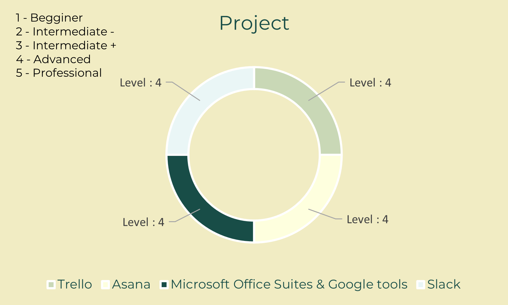
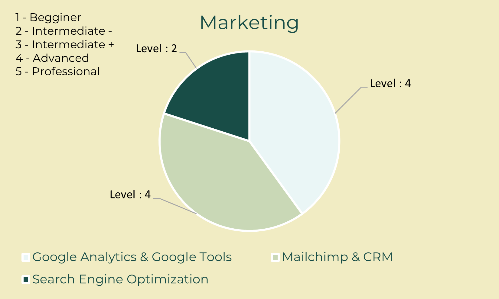
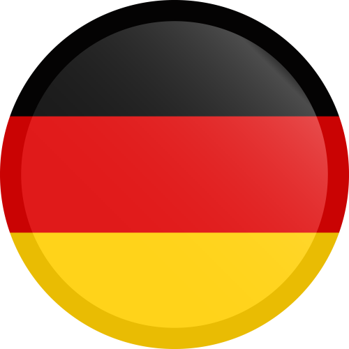
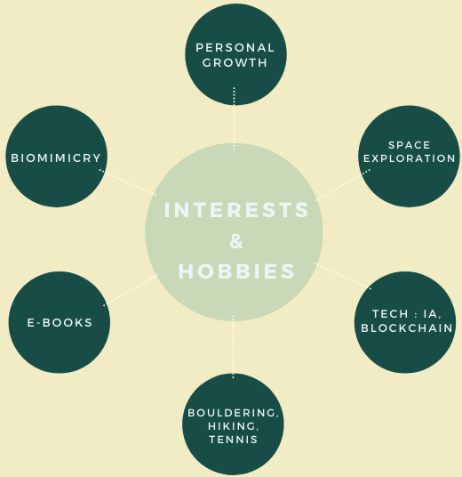

Welcome to my Curriculum Vitae site. My goal is to evolve with those who make
the world of tomorrow.
We won't do without technology, but we can choose what to build with it.
That's why I joined Time for the Planet in 2020 and Data for Good recently.
After a Master's degree in International Business, specialization Entrepreneurship and Innovation and
two years of experiences in startups as right-hand of CEO, I have been consolidating my knowledge by
training as a Data Analyst for a few months.
My goal is to join an innovative company wishing to have a positive impact on society through data and
science.
Here is my background.
Timeline.
A business school curriculum.
After a Baccalauréat ES specializing in maths - with honors, European honors, and ancient Greek options - I joined
the Grande Ecole Program of ESCE International Business School based in Lyon and Paris.
Duration: 2014 - 2019.
Internship : 14 months. Semesters abroad: 2.
Specialization: Entrepreneurship & Innovation.
Final year thesis: How sustainable development is a source of innovation and growth for startups.
Entrepreneurship and Innovation Specialization
Graduation thesis:
Sustainable development: a source of innovation and growth for startups.
Key words: sustainable development, startup, innovation, business model, value chain.
Check out. Other projects : Memory Lane. App that allows to record, classify and access intuitively in only a few clicks the recordings of the web.
Academic Semesters: 2016 - Hochschule für Wirtschaft und Recht (HWR) Berlin (Berlin School of Economics and Law)
#macroeconomics, microeconomics, business, social sciences
2018 - Victoria University of Wellington, New Zealand
#entrepreneurial project, marketing, management, digital innovation.
Essay on Precision Agriculture Technology. Check out. Participation : Global Entreprise Experience 2018 Team Leader: team consisting of 8 people from 6 different nationalities.
3 weeks to write a "Business Proposal" according to the 8 goals of the United Nations.
Blue Hope Project. Check out.
Self-taught courses in parallel.
With an appeal to science and innovation, as well as a very "business" background, I wanted in
2019 to take a side course regarding science literacy.
I also wanted my future professional experiences to be biomimicry, sustainable development and innovation oriented.
In parallel with an interest in data & tech I wanted to train in code starting with HTML/CSS/Javascript then Python.
Self-taught courses in parallel
2019 : Coursera : Erasmus University of Rotterdam
Science literacy : How solid science can help you save the world
Project : Light Pollution,
alternatives to improve our world, available on YouTube
2019 : Openclassroom : University of London
Responsive Website Basics : HTML/CSS/JavaScript
Experiences in biotechnology
Aglaé is a pioneer company specialized in glowing plants.
The goal is to develop the cities of tomorrow in a sustainable way to reduce light pollution and
promote the greening of spaces.
Mars 2019 - August 2019: End of studies internship as Business Developer and right-hand of the CEO.
August 2019 - March 2020: Freelance: Business Developer & Coordinator.
Experience in Biotechnology
Missions:
- Co-construction of the business strategy and growth drivers
- Funding research (5 competitions won, Innov'up, CIR writing assistance)
- Support for export development in the Middle East region
- Project management, Implementation of tools to help and monitor projects, Project
coordination.
- Financial strategy, organization and accounting
- Refining a business plan and financial plan to prepare for fundraising
- Marketing (CRM), communication (social networks) and events
- Pitching and project presentations (competitions, investors, university and conferences).
- Events, live animation, scientific vulgarization
- R&D support and help in the handling of plants
Experience in the textile industry
Mask Generation/Le Mask Français is specialized in the manufacture and marketing of high-end
anti-pollution masks. Made in France, following an eco-design study, the premium model,
is the result of two years of research & development and patented.
January 2020 - December 2020 : Freelance & employee; Operations manager and right hand of the CEO.
Experience in the textile industry
Missions:
- Implementation of the pre-covid fundraising project
- Management and coordination of the website (solving problems and setting up its
restructuration
: sales x1000 in a month causing disruptions; tools : Wordpress, Prestashop & Google Cloud Platform)
- Coordination and ongoing liaison with partners and providers (logistics, website providers,
etc)
- Logistics and process optimization (reduce order delivery times to a minimum using data
analytics)
- B2B and B2C sales strategy (partnership)
- HR: recruitment in times of health emergencies: from 3 to 17 people
- Covid-19 crisis management: production, logistics, recruitment, customer relations,
implementation of tools...
- Supervisor communication, marketing and media pole.
Positive impact commitments
Impact entrepreneurship and collective intelligence enable further societal progress.
September 2019 : Volonteer at Biomim'expo Paris.
July 2020: Time for the Planet Associate and December 2020: Innovation Evaluator.
July 2021: Data for Good Volunteer.
Committing to positive impact initiatives
Biomim'expo, the meeting to propose to rethink our
development model and move to a Bio-Inspired Economy.
Data for Good is a 100% volunteer association
of 2500+ tech volunteers (Data Scientists, Data Analysts, Data Engineers, Full Stack developers,
UX Designers, Project Managers) who want to get involved in general interest issues by putting
their skills to work for associations and NGOs.
Data For Good organizes project acceleration seasons and numerous events to build together and
brick-by-brick the world of tomorrow.
Time for the Planet is a nonprofit company that creates
and funds businesses fighting climate disruption on a global scale.
The mission? To raise €1 billion to create 100 companies that fight against climate change.
In Open Source, so that they can be duplicated and improved everywhere else on the planet.
In order to multiply their impact.
A shift to a data-driven business mindset
After my experience at Mask Generation, I became aware of the importance of data in the evolution
of the company. For several months, I train and continue to train in programming, statistics and
visualization. I also consolidate my knowledge on tools and software.
A shift to a data-driven business mindset
2021: Udemy : Data Science A-Z Key words : Data Science, Business Analytics, Data Analysis, Data Mining, Tableau, Statistics,
Modeling, Regression, SQL, SSIS
2021 and still learning: Udemy : 100 Days of Code: Python Pro Bootcamp
Key words : PyCharm, Jupyter Notebook, Beautiful Soup, APIs, Data Science, Webscraping, NumPy, Pandas... 100 days for 100 projects : games, app, data science etc...
2021: LinkedIn Learning: Become a Data Analyst Specialist
Key words : Data analytics, Data Visualization, Statistics, Excel, PowerQuery, PowerBI & DAX,
Tableau, R, Python
Hard Skills.


Soft Skills.
Languages

French as native language
English, fluent (TOEIC 850 in 2016 & TOEFL 94 in 2018)
German as intermediate level
Interests

Get In Touch
Looking for an opportunity in a Data (& Business Intelligence) Team starting in September 2021.
Based in Lyon but mobile throughout Europe. Flexible on-site / remote work.